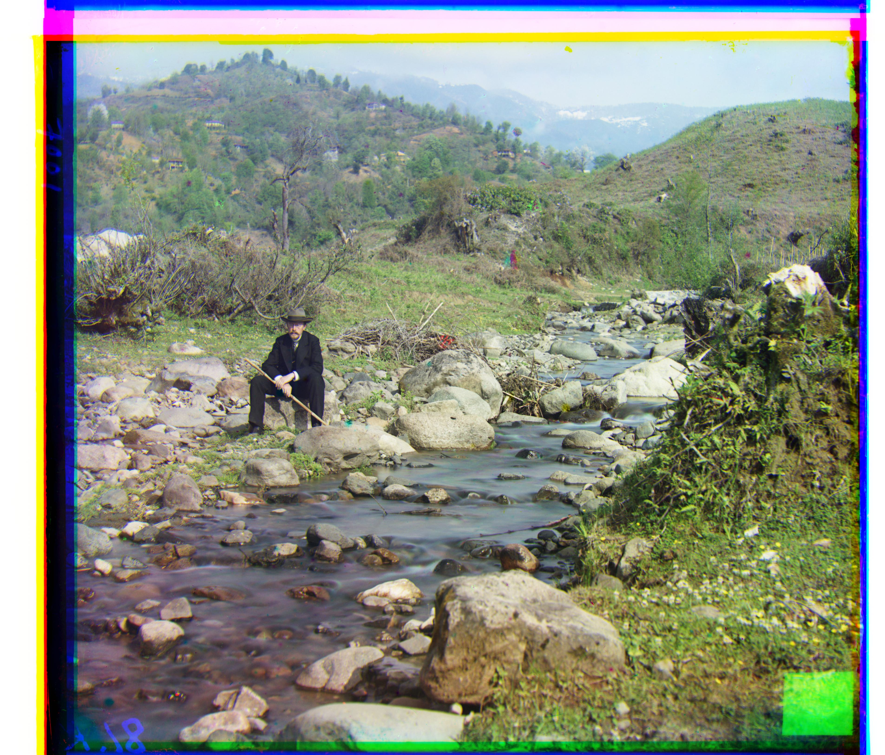
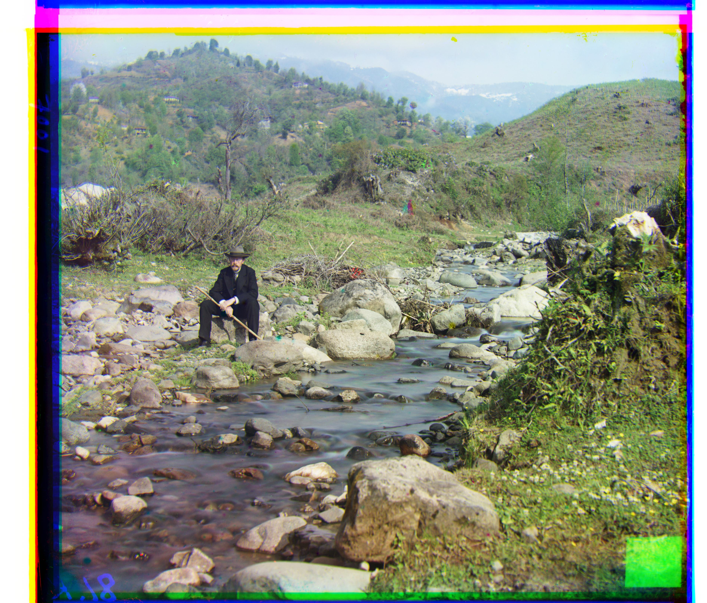

When I was first introduced to this project by Professor Alexei A. Efros,
I was immediately captured by Sergei Mikhailovich Prokudin-Gorskii’s innovative mindset.
Prokudin-Gorskii was a pioneer in the field of color photography,
foreseeing its future as early as 1907. After gaining special permission from the Tzar,
Prokudin-Gorskii embarked on an ambitious journey. In his expeditions across the Russian Empire,
he captured thousands of images, ranging from people to architecture to nature.
His technique involved photographing scenes with three separate exposures on glass plates,
each filtered through red, green, and blue filters. However, in Prokudin-Gorskii’s time period,
there was no technology available to produce colored images from his black and white images.
Prokudin-Gorskii’s glass plate negatives were later digitized by the Library of Congress,
and thus the objective of this project became clear: to put Prokudin-Gorskii’s hard work
into fruition and display a unique glimpse of the Russian Empire’s final years.
The objective of my project is to take the digitized glass plate images and use
image processing techniques to recreate color images with minimal visual artifacts. To
achieve this, I implemented and tested several methods for aligning the three color channels.
Initially, I employed an exhaustive search method using L2 norm and normalized cross correlation
on low resolution images. Based on the visual results, I determined that NCC offered better
performance for alignment. I then implemented a Gaussian image pyramid approach to handle higher
resolution images more efficiently. While this method successfully improved the alignment, it
significantly increased computation time. To address this, I optimized my algorithm by vectorizing
large array operations and parallelizing processes, which substantially reduced the processing time.


 
